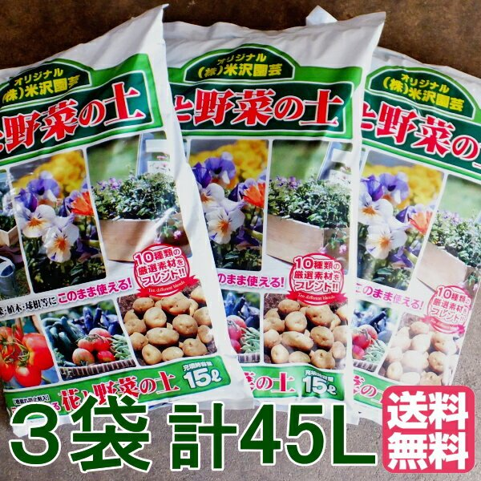
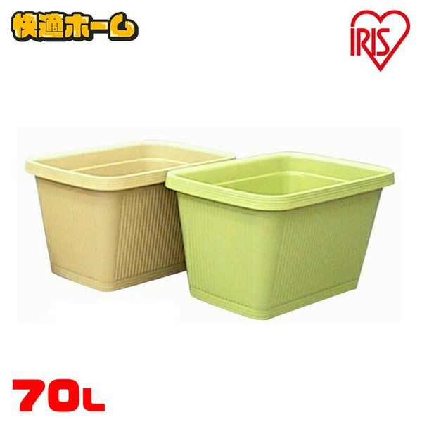
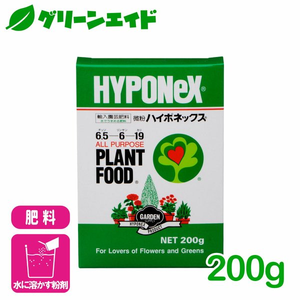
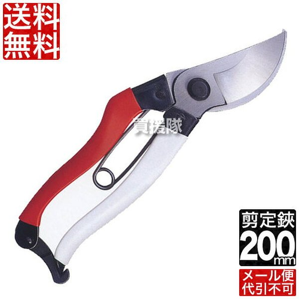
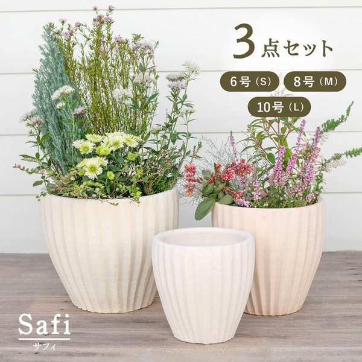
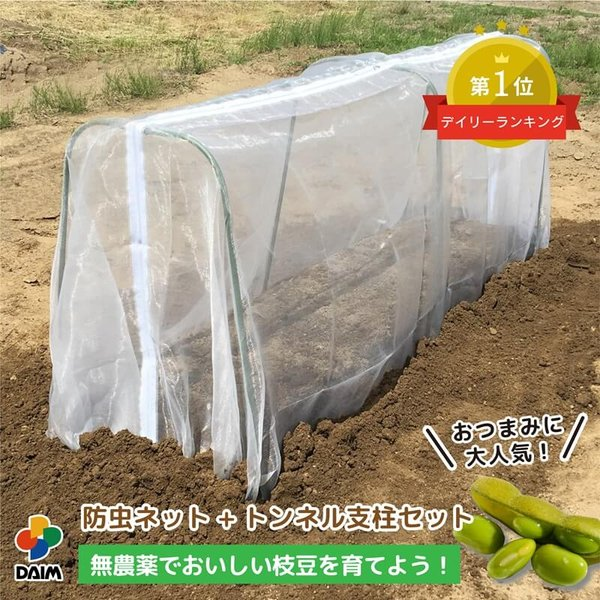
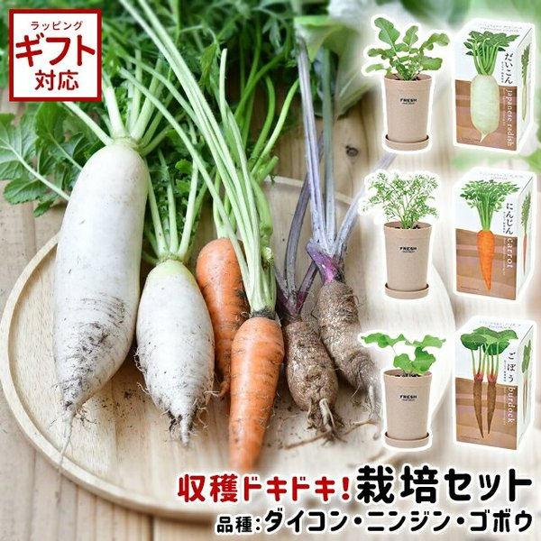
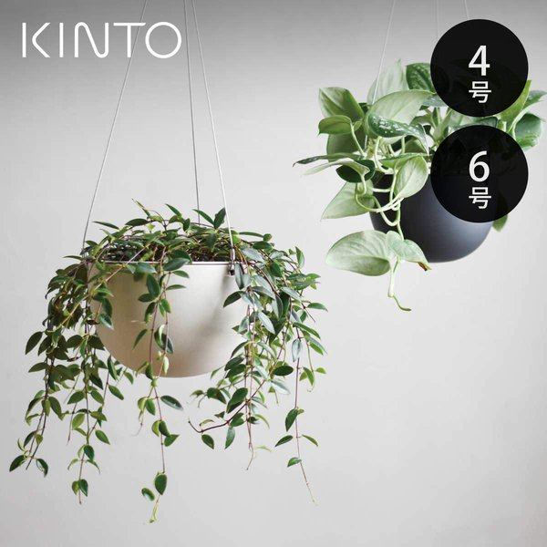
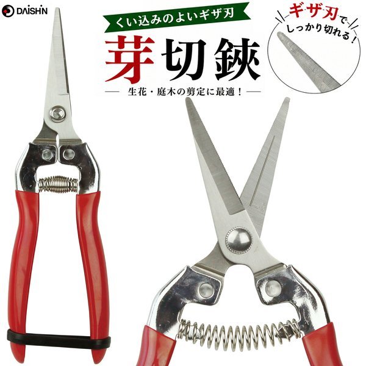
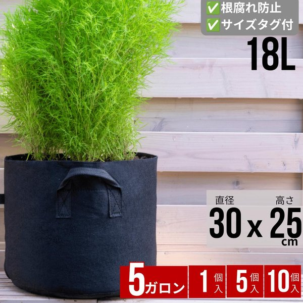

【2026年・ベランダ菜園】初心者の家庭菜園＆室内グリーン入門グッズ10選｜米沢園芸の培養土・アイリスオーヤマ ベジタブルプランター・ハイポネックス・岡恒 剪定鋏・サフィ テラコッタ・DAIM 防虫ネット・聖新陶芸 根菜キット・KINTO プラントポット・大進 芽切鋏・Leaf88 不織布プランターを実売価格で比較
ベランダ菜園は、土とプランターと水やりさえ揃えば始められます。ところが道具を一度に買うと、使わないものが半分出ます。最初の1シーズンは、土・プランター・肥料・はさみの4つで足ります。
選ぶ軸は3つです。まず日当たり。半日以上陽が当たる場所ならミニトマトやナス、午前中だけならハーブや葉物を選びます。次に水やりの回数。ベランダは風で乾きやすいので、鉢は深型か不織布かを好みで選びます。最後に虫対策。防虫ネットは支柱ごと覆えるセットにすると、組み立ての手間が減ります。なお、レビュー件数が50件に満たない商品は記事内に実数を明記しています。
本記事では、楽天市場で人気・高評価のベランダ菜園・室内グリーン入門グッズ10選を、実売価格とレビュー評価つきで写真付き紹介します。
- おすすめ10選 スペック・特徴比較表
- BEST 1｜米沢園芸 花と野菜の土 15L×3袋セット（45L）
- BEST 2｜アイリスオーヤマ ベジタブルプランター 深型 650
- BEST 3｜ハイポネックス 微粉ハイポネックス 200g
- BEST 4｜岡恒 剪定鋏 200mm ユニーク No.103（日本製）
- BEST 5｜サフィ テラコッタ 3点セット（6号・8号・10号）
- BEST 6｜DAIM 枝豆栽培用 防虫チャレンジセット
- BEST 7｜聖新陶芸 おうちで根菜栽培セット
- BEST 8｜KINTO プラントポット 14cm（ハンギング）
- BEST 9｜大進 ステンレス ギザ刃 芽切鋏 185mm
- BEST 10｜Leaf88 不織布プランター 5ガロン（直径30×高さ25cm）
- 【読者負担0円】買わなくても得する無料サービス
- まとめ：ベランダ菜園・ガーデニング入門10選の選び方
| 順位 | 商品名 | ブランド | 最大の特徴・おすすめ理由 | 総合評価 |
|---|---|---|---|---|
| BEST 1 | 米沢園芸 花と野菜の土 15L×3袋セット（45L） | 米沢園芸 | 袋を開けて入れるだけ | 4.70 |
| BEST 2 | アイリスオーヤマ ベジタブルプランター 深型 650 | アイリスオーヤマ（IRIS OHYAMA） | 根が張れる深型 | 4.91 |
| BEST 3 | ハイポネックス 微粉ハイポネックス 200g | ハイポネックス（HYPONEX） | 水に溶かすだけで追肥できる | 4.72 |
| BEST 4 | 岡恒 剪定鋏 200mm ユニーク No.103（日本製） | 岡恒（OKATSUNE） | 日本製の刃物で切れ味が続く | 4.83 |
| BEST 5 | サフィ テラコッタ 3点セット（6号・8号・10号） | サフィ（Safi） | 3サイズ揃って植え替えに使える | 4.55 |
| BEST 6 | DAIM 枝豆栽培用 防虫チャレンジセット | DAIM（ダイム） | ネットと支柱がセットで届く | 4.68 |
| BEST 7 | 聖新陶芸 おうちで根菜栽培セット | 聖新陶芸 | 種と土と鉢がセットで届く | 4.74 |
| BEST 8 | KINTO プラントポット 14cm（ハンギング） | KINTO（キントー） | 吊るすだけでベランダの空間を使える | 4.63 |
| BEST 9 | 大進 ステンレス ギザ刃 芽切鋏 185mm | 大進（DAISHIN） | ギザ刃で細い茎も切れる | 4.59 |
| BEST 10 | Leaf88 不織布プランター 5ガロン（直径30×高さ25cm） | Leaf88（リーフハチハチ） | 軽くてベランダでも扱いやすい | 4.71 |
米沢園芸 花と野菜の土 15L×3袋セット（45L）

米沢園芸の花と野菜の土は、そのままプランターに空けて使える培養土です。15Lが3袋で45L、深型プランター1台と浅型2台分に足ります。元肥入りで、野菜も花も同じ土で始められます。楽天市場での実売価格は約2,750円（2026年11月時点）。
- 袋を開けて入れるだけ
- 45Lでプランター2〜3台分
- 花にも野菜にも使える
- レビュー2,234件。重いので、届いたら設置場所まで手運びになる
アイリスオーヤマ ベジタブルプランター 深型 650

アイリスオーヤマのベジタブルプランターは、深さのある野菜用プランターです。650サイズで、ミニトマトやナス、きゅうりの根が張れる深さがあります。底面には排水の穴があり、ベランダでも水はけを保てます。楽天市場での実売価格は約2,690円（2026年11月時点）。
- 根が張れる深型
- 650サイズで存在感がある
- 排水穴付きで水はけが良い
- レビュー11件と50件未満。土を入れると重いので、移動は設置前に行う
ハイポネックス 微粉ハイポネックス 200g

ハイポネックスは、水に溶かして与える園芸肥料です。200gの粉を水に溶かし、じょうろで株元にかけます。花にも野菜にも使え、実が付く時期の追肥に向きます。楽天市場での実売価格は約1,080円（2026年11月時点）。
- 水に溶かすだけで追肥できる
- 花にも野菜にも使える
- 200gで長く使える
- レビュー74件。溶かす手間があり、濃度を間違えると根を傷める
岡恒 剪定鋏 200mm ユニーク No.103（日本製）

岡恒の剪定鋏は、日本製の園芸はさみです。200mmの刃で、枝や茎を切るのに使います。刃が食い込みやすい形で、太い枝でも力を入れすぎずに切れるのが特徴です。楽天市場での実売価格は約2,940円（2026年11月時点）。
- 日本製の刃物で切れ味が続く
- 200mmで太めの枝にも届く
- 持ち手が握りやすい
- レビュー171件。切れ味が落ちたら研ぐ手間があり、使ったあとは刃の水気を拭く
サフィ テラコッタ 3点セット（6号・8号・10号）

サフィのテラコッタは、素焼きの植木鉢3点セットです。6号・8号・10号と大きさが違い、ハーブからミニトマトまで鉢を選べます。素焼きは通気性があり、土が乾きやすいぶん根腐れを防げます。楽天市場での実売価格は約4,620円（2026年11月時点）。
- 3サイズ揃って植え替えに使える
- 素焼きで通気性がある
- ベランダに置くと見栄えがする
- レビュー899件。屋外では割れやすいので、強風の日は倒れないよう固定する
DAIM 枝豆栽培用 防虫チャレンジセット

DAIMの防虫チャレンジセットは、枝豆の栽培に必要な防虫ネットと支柱をまとめたものです。間口40〜50cmのトンネル状で、高さ60cmまで覆えます。ネットを掛けたまま収穫できるファスナー付きで、虫の付く時期も安心です。楽天市場での実売価格は約3,980円（2026年11月時点）。
- ネットと支柱がセットで届く
- ファスナー付きで開け閉めできる
- 枝豆を害虫から守れる
- レビュー62件。組み立てに場所を取るので、ベランダの幅を測ってから選ぶ
聖新陶芸 おうちで根菜栽培セット

聖新陶芸の根菜栽培セットは、室内で大根や人参を育てるキットです。鉢と土、種がセットになり、付属の袋のまま育てて収穫できます。日当たりの良い窓辺に置けば、ベランダがなくても野菜作りの入口になります。楽天市場での実売価格は約1,100円（2026年11月時点）。
- 種と土と鉢がセットで届く
- 室内の窓辺で育てられる
- 収穫までが見えて子どもと楽しめる
- レビュー19件と50件未満。根菜は深さが要るので、大きな収穫は見込みにくい
KINTO プラントポット 14cm（ハンギング）

KINTOのプラントポットは、吊るして使える植木鉢です。14cmの4号サイズで、観葉植物や多肉植物を入れられます。ハンギング用の紐が付き、ベランダの手すりや室内のフックに掛けられます。楽天市場での実売価格は約2,750円（2026年11月時点）。
- 吊るすだけでベランダの空間を使える
- 14cmで観葉植物にちょうどいい
- 室内でも見栄えがする
- レビュー191件。吊り下げる場所の強度を確認してから掛ける
大進 ステンレス ギザ刃 芽切鋏 185mm

大進の芽切鋏は、収穫用の園芸はさみです。185mmのステンレス刃で、トマトやハーブの茎を傷めずに切り取れます。ギザ刃で滑りにくく、細い茎もつかまずに切れるのが利点です。楽天市場での実売価格は約799円（2026年11月時点）。
- ギザ刃で細い茎も切れる
- ステンレスで錆びにくい
- 軽量で長時間使える
- レビュー41件と50件未満。太い枝には向かず、剪定には別の鋏が要る
Leaf88 不織布プランター 5ガロン（直径30×高さ25cm）

Leaf88の不織布プランターは、フェルト状の布でできた植木鉢です。5ガロン・直径30×高さ25cmで、土の量を抑えながら野菜を育てられます。布の側面から空気が入り、根が回り込みにくいのが特徴です。楽天市場での実売価格は約1,180円（2026年11月時点）。
- 軽くてベランダでも扱いやすい
- 通気性が高く根腐れしにくい
- 使わないときは畳める
- レビュー387件。布製なので乾きが早く、夏は水やりの回数が増える
この記事の商品を買う前に、まずは無料で得する選択肢をチェック。どれも登録・利用は0円で、無料期間中に解約すれば料金はかかりません。読みたい雑誌がある人、ポイントを貯めたい人、アンケートなら気軽という人、それぞれに合うものを選べます。
初回31日無料・無料期間中に解約すれば0円 → 楽天ポイントモール｜登録無料で毎日ポイ活
買い物なしでもポイントが貯まる無料サービス → 楽天インサイト｜アンケートに答えてポイント
登録無料・すきま時間のアンケートで貯まる → 楽天カード｜年会費永年無料
新規発行・年会費ずっと0円 →
4つのサービスの違いと使い分けは「出費0円で得する！買わずにポイントが貯まる無料サービス厳選4選」でまとめています。
💡 まとめ：ベランダ菜園・ガーデニング入門10選の選び方
ベランダ菜園は、土とプランターを決めると一気に現実的になります。まずは米沢園芸の花と野菜の土と、アイリスオーヤマのベジタブルプランター深型650の組み合わせ。元肥入りの土なので、最初の1か月はこれだけで育ちます。実が付き始めたらハイポネックスの微粉を水に溶かして追肥し、混み合った枝は岡恒の剪定鋏で透かします。植え替えや寄せ植えにはサフィのテラコッタ3点セット、収穫は大進の芽切鋏。虫が増える時期はDAIMの防虫チャレンジセットで枝豆ごと覆います。ベランダに置く場所がない日はKINTOのプラントポットを手すりに掛け、室内で葉物を試すなら聖新陶芸の根菜栽培セットから。軽く動かせる鉢が欲しいときはLeaf88の不織布プランターが便利です。まずは土とプランターの2つだけ、買ってみてください。
楽天市場では「5と0のつく日」や「お買い物マラソン」などのキャンペーンに合わせて購入すると、ポイント還元が最大化してお得に手に入ります。ぜひチェックしてみてくださいね。